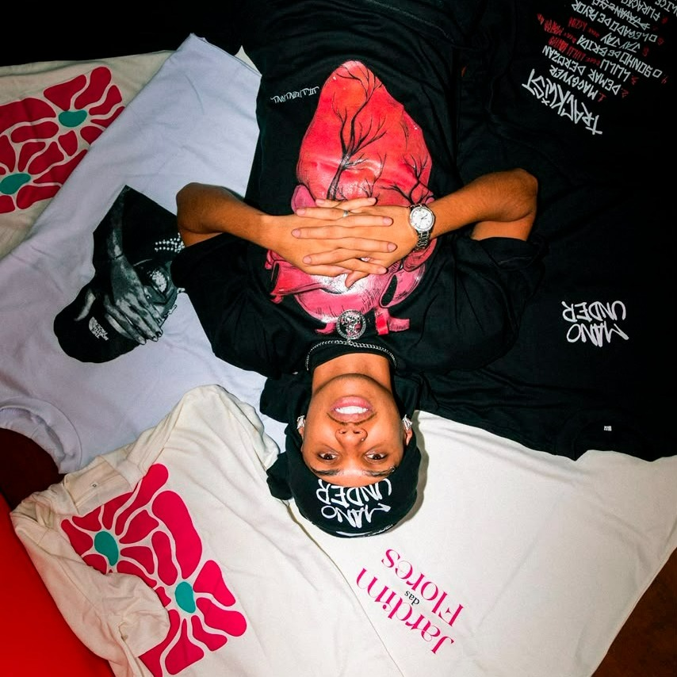
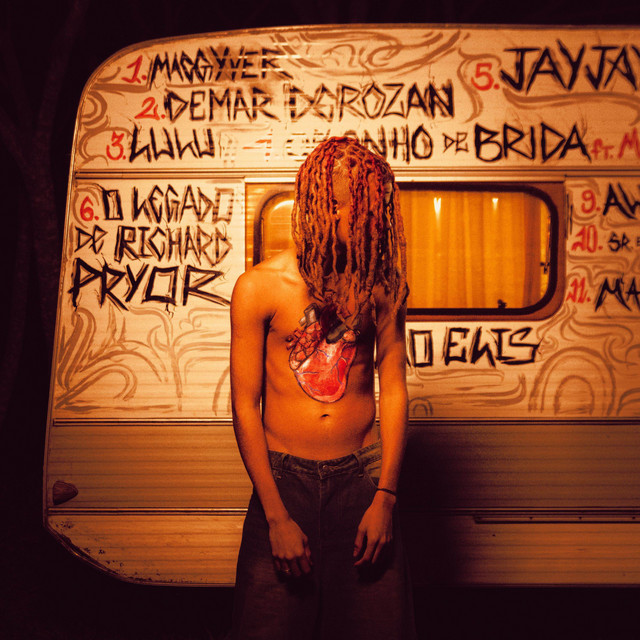

O que acontece entre
um palco e outro.
Fotos, registros e novidades no perfil da Central.

Da roda ao palco.
O que move Jotapê, você encontra aqui.
Mais um Silva.
Uma conexão de vozes. Um novo ponto de encontro com o som de Jotapê.
Acessar lançamento Link de lançamento disponível na Central.
A voz.
A presença.
A própria história.
Entre a roda de rima e o próximo play, um universo em movimento. A Central aproxima você da música, das batalhas e de tudo que vem depois.
Encontre o artista

Fotos, registros e novidades no perfil da Central.
Seleção editorial demonstrativa. Conteúdos completos nos canais de origem.
Novos palcos. A mesma conexão.
Local e data a confirmar
A agenda desta demonstração ainda não possui eventos confirmados.
Consultar agenda e ingressos na CentralO encontro, a resposta, o improviso. Entre na Central de MCs e acompanhe a cultura que acontece ao redor do microfone.
O universo da Central também vai com você.
Ver merch Explore as peças e a disponibilidade na loja.